Sprint 10.7 lô 7 — trước / sau (ảnh Playwright, dữ liệu mô phỏng)
admin-courses-1440
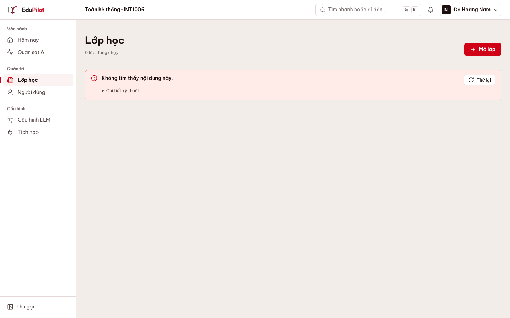
Trước (main @ 10.6)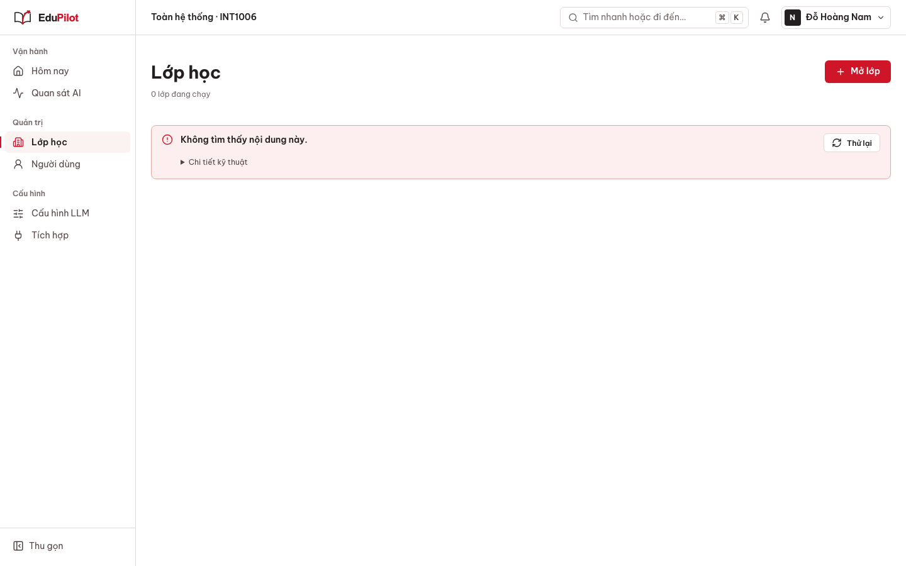
Sau (sprint/10.7-ui-r)admin-courses-375
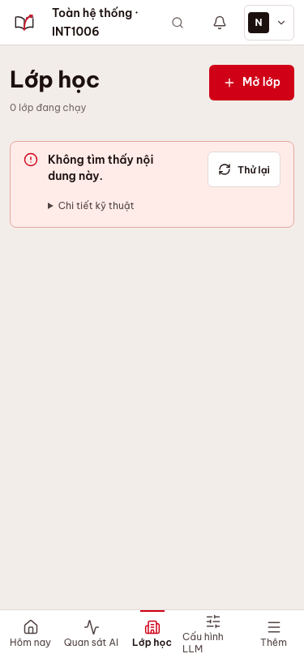
Trước (main @ 10.6)Sau (sprint/10.7-ui-r)analytics-1440
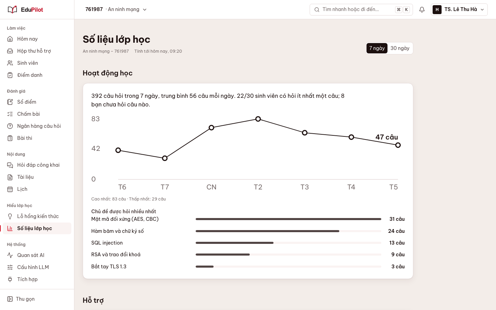
Trước (main @ 10.6)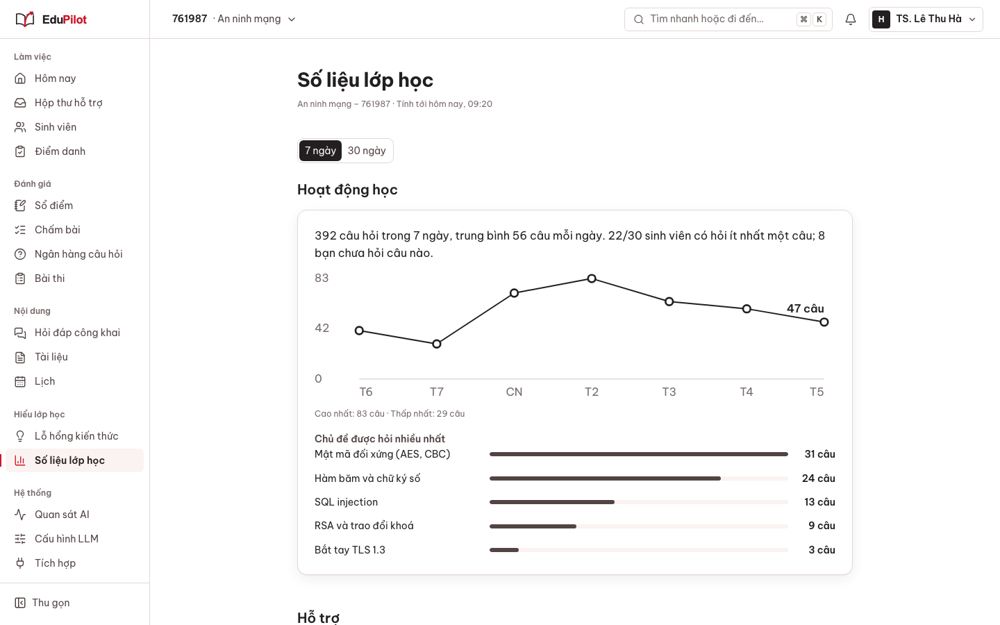
Sau (sprint/10.7-ui-r)analytics-375
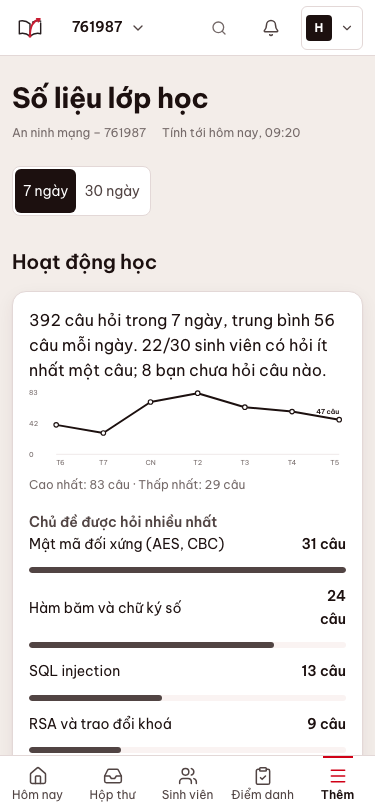
Trước (main @ 10.6)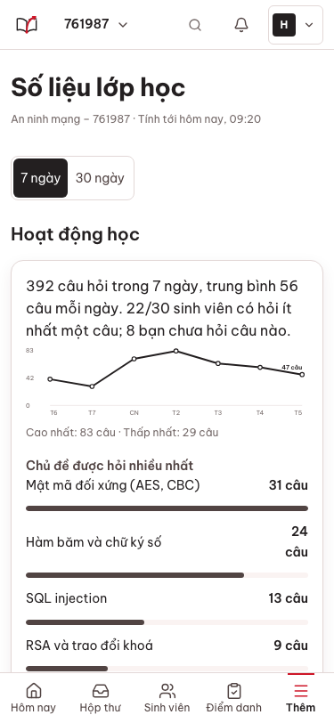
Sau (sprint/10.7-ui-r)integrations-1440
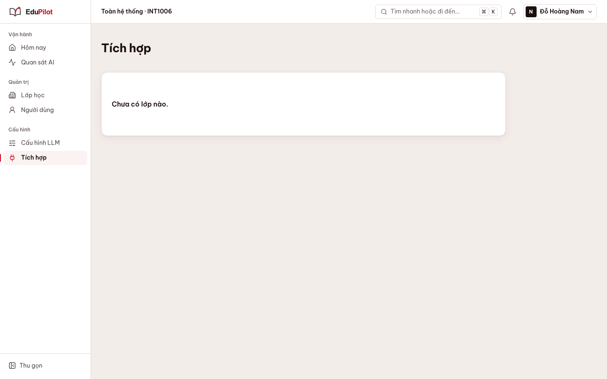
Trước (main @ 10.6)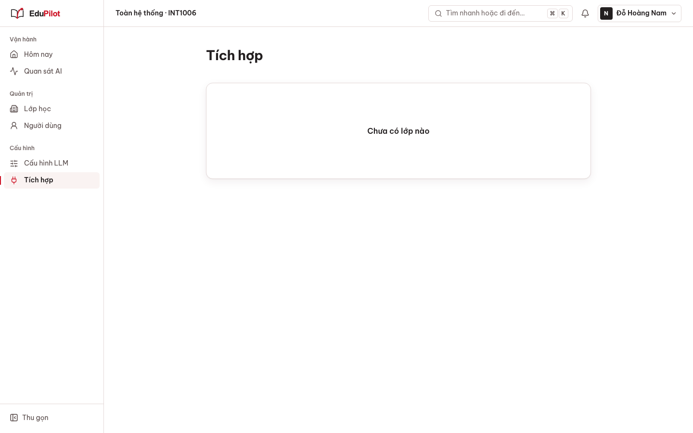
Sau (sprint/10.7-ui-r)integrations-375
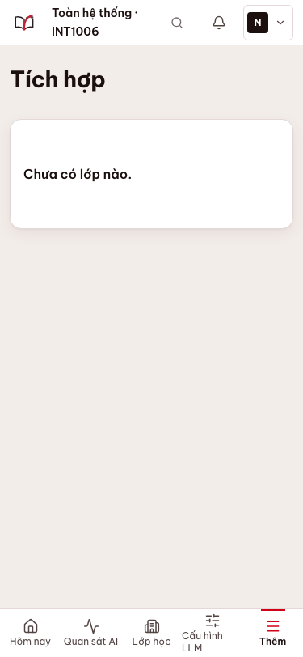
Trước (main @ 10.6)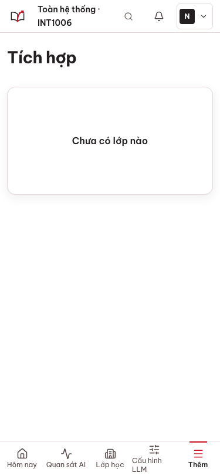
Sau (sprint/10.7-ui-r)observability-1440
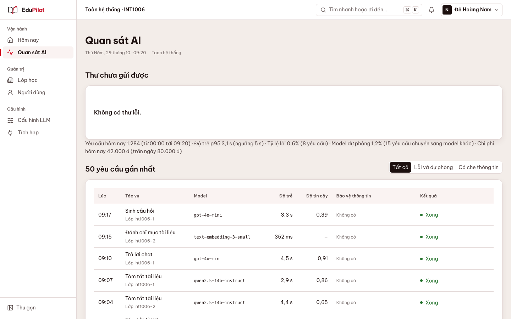
Trước (main @ 10.6)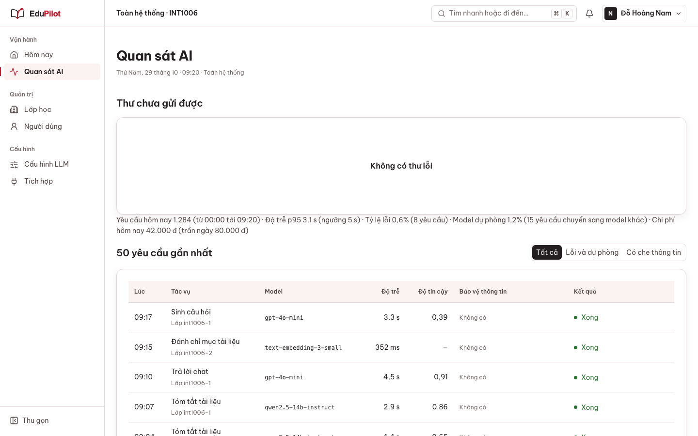
Sau (sprint/10.7-ui-r)observability-375
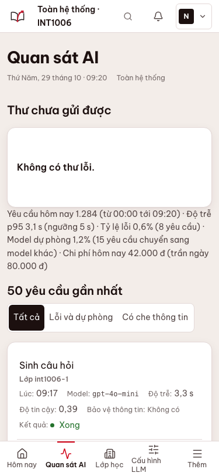
Trước (main @ 10.6)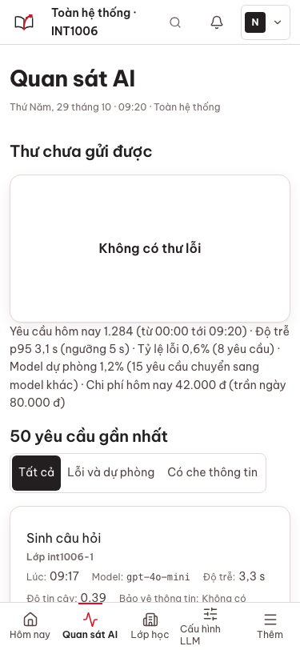
Sau (sprint/10.7-ui-r)settings-llm-1440
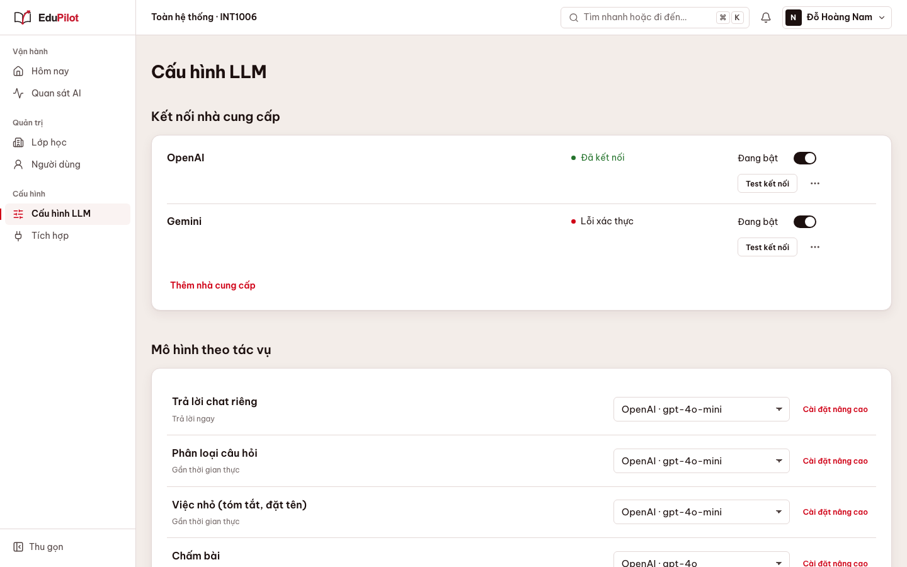
Trước (main @ 10.6)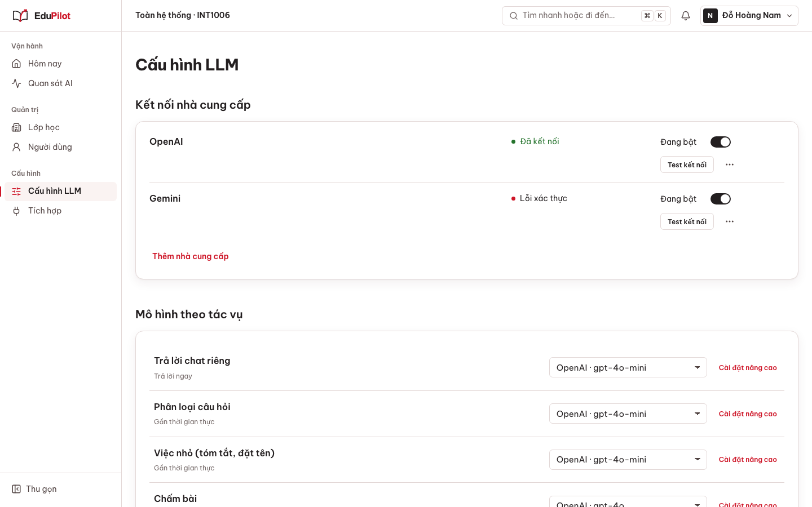
Sau (sprint/10.7-ui-r)settings-llm-375
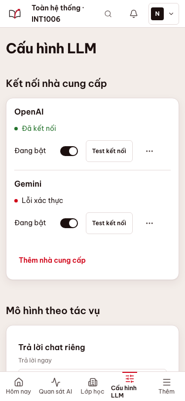
Trước (main @ 10.6)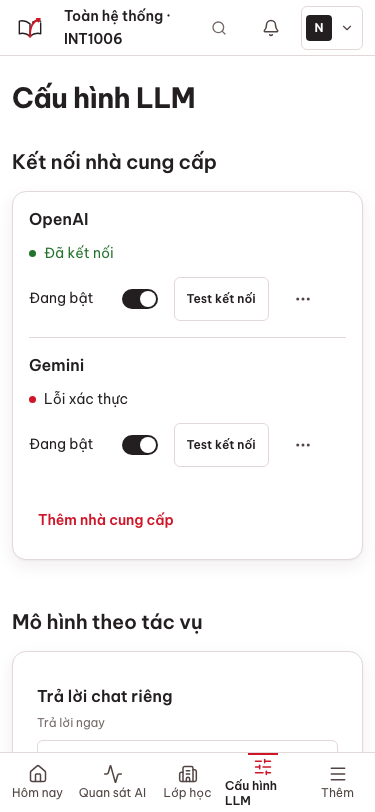
Sau (sprint/10.7-ui-r)